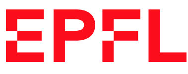
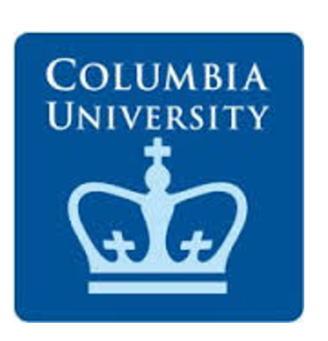

News
*** I am available on the job market ***
- Jan 2021 — Our paper on Random Feature Attention got a spotlight at ICLR 2021! ↴
→ Congrats to Hao for leading the project!
- Jan 2021 — Two papers on Deep-Shallow Models and Random Feature Attention accepted at ICLR 2021.↴
→ Congrats to Jungo and Hao for leading each project respectively!
- Oct 2020 — Serving as review commitee member of ICLR 2021, IJCAI 2021 and NAACL-HLT 2021.
- Sep 2020 — Three papers on Grounded LMs, Multilevel Text Alignment, and PnP Autoencoders accepted at EMNLP 2020.↴
→ Congrats to Xuhui and Florian for leading two of the projects!
- Sep 2020 — Ranked among the top-33% reviewers for my service at ICML 2020.
- Jul 2020 — Serving as review commitee member of EMNLP 2020, AACL 2020 and COLING 2020.
- Jun 2020 — Paper on Fast Autoregressive Transformers with Linear Attention to appear at ICML 2020. ↴
→ Congrats to Angelos for leading the project!
Present
|
2019
|
2016

|
2014

|
2011

|
|